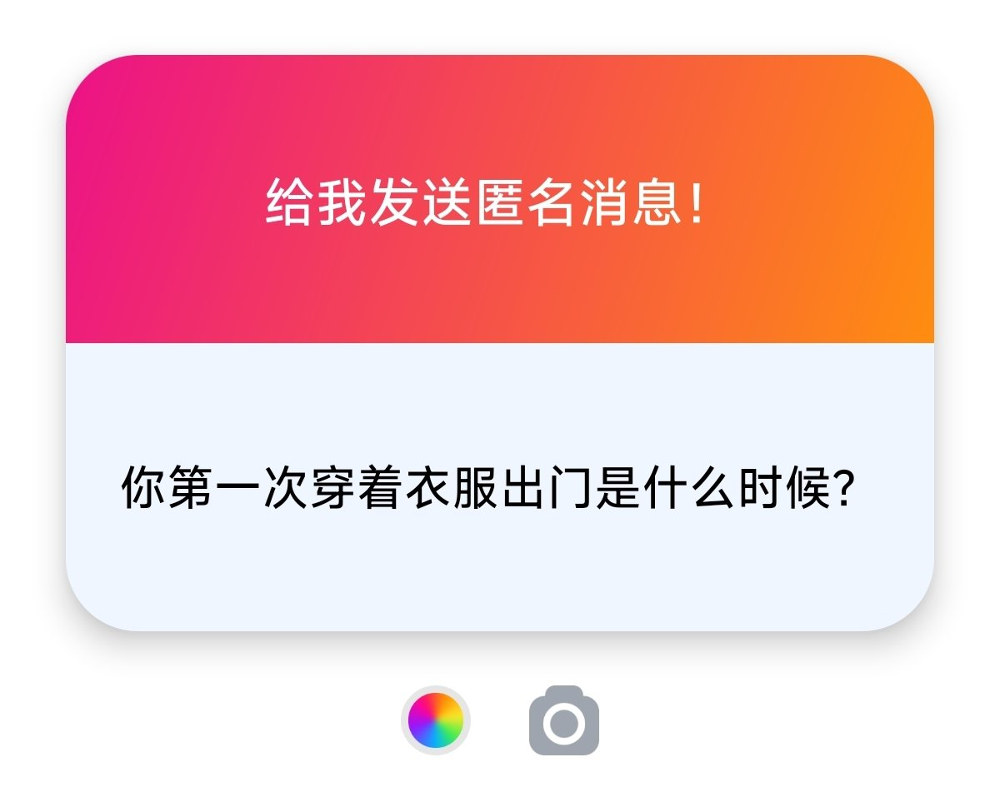
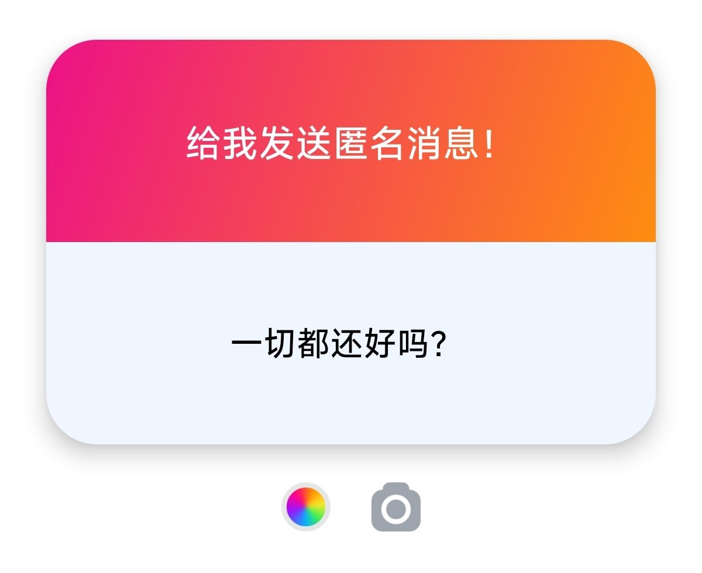

奶昔🥤
@realNyarime
@alessa_choc 1）我也，尤其是战术JK好酷，捆绑的话想被吊起来
2）当时是漫展，尤其是高中要剃头发，不能过眉毛遮耳朵
3）我有点emo 需要漂亮Alessa姐姐的照片 才能使我快乐🙂


不会做饭的Alessa
@alessa_choc
深夜回答问题捏:
1. xp有很多，已经在照片中出现在我身上的衣服类型都是我的xp，除此之外还有胶衣、战术JK、捆绑等风格都是我的xp，未来有机会会尝试一二。
2.接近10年前，在高中，那时候太莽了，现在是基本不会尝试穿女装出门了。
3.I'm fine, thank you, and you? https://t.co/95wIkLnMph